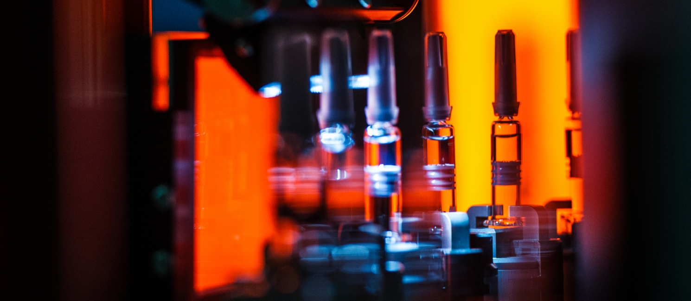

Фото сотрудника с производства компании «Петровакс»
Компания «Петровакс Фарм» объявила о начале поставок четырехвалентной вакцины для профилактики гриппа «Гриппол® Квадривалент». Общий объем поставок вакцины для российского и зарубежного рынков в 2022 году составит более 2,5 млн доз.
Вакцина «Гриппол® Квадривалент» зарегистрирована в России в 2018 году, препарат производится в России по технологии полного цикла производства готовой лекарственной формы (ГЛФ) в соответствии со стандартами GMP на собственном предприятии компании. Эта гриппозная вакцина защищает от 4-х штаммов: 2-х вирусов типа А (H1N1 и H3N2) и вируса типа В 2-х линий (B/Ямагата + В/Виктория). Адъювант азоксимера бромид, входящий в ее состав, в три раза снижает количество антигенов в вакцине и обеспечивает выраженный гуморальный и клеточный иммунный ответ, что подтверждено научными публикациями в международных рецензируемых журналах Frontiers in Immunology, Vaccine и др. [1][2][3][4][5][6]
Технологии
«Гриппол® Квадривалент» разработан по технологии производства вакцин семейства «Гриппол®», которые входят в государственные программы иммунизации ряда стран, имеют широкую доказательную базу и многолетний опыт применения. Создание и поставки вакцины соответствуют реализации национальной Стратегии развития иммунопрофилактики инфекционных болезней на период до 2035 года, в рамках которой в России утвержден план перехода на использование четырехвалентных вакцин для профилактики гриппа на период 2021-2025 гг.[7]
«Поддержание и укрепление иммунитета граждан – одно из ключевых направлений деятельности компании. Поставки современной вакцины «Гриппол® Квадривалент» открывают не только дополнительные возможности по защите российских пациентов от вируса гриппа, но и позволяют расширить экспортный потенциал компании»
Михаил Грубман
Управляющий директор биотехнологического бизнеса «Петровакс Фарм».
«Поддержание и укрепление иммунитета граждан – одно из ключевых направлений деятельности компании. Поставки современной вакцины «Гриппол® Квадривалент» открывают не только дополнительные возможности по защите российских пациентов от вируса гриппа, но и позволяют расширить экспортный потенциал компании»
Михаил Грубман
Управляющий директор биотехнологического бизнеса «Петровакс Фарм».
С 2012 года ВОЗ рекомендует применять именно квадривалентные вакцины[8], как наиболее эффективное средство в борьбе с гриппом[9]. Все противогриппозные вакцины, применяемые для иммунизации в США в последние годы, включая используемые в педиатрическом сегменте, являются квадривалентными. Большинство стран ЕС также используют преимущественно четырехвалентные вакцины. [10][11][12]
По мнению экспертов, прививаться следует за 2-3 недели до начала роста заболеваемости гриппом, оптимальный период для прививки – с сентября по ноябрь. Во время пандемии COVID-19 вакцинация против гриппа является частью профилактики сезонных респираторных вирусных инфекций и снижает риски заражения и тяжелого течения заболевания.
«Петровакс» является крупнейшим экспортером противогриппозных вакцин[13], компания более 14 лет поставляет на российский и зарубежный рынок тривалентную вакцину «Гриппол® плюс», в этом году объем ее поставок превысит 12,5 млн доз.
[1] Vladimir Talayev, Irina Zaichenko, Maria Svetlova. Low-dose influenza vaccine Grippol Quadrivalent with adjuvant Polyoxidonium induces a T helper-2 mediated humoral immune response and increases NK cell activity. Vaccine. 2020 Sep 29;38(42):6645-6655. doi: 10.1016/j.vaccine.2020.07.053. Epub 2020 Aug 29. https://pubmed.ncbi.nlm.nih.gov/32873403/.
[2] Kostinov MP, Akhmatova NK, Khromova EA and Kostinova AM (2020) Cytokine Profile in Human Peripheral Blood Mononuclear Leukocytes Exposed to Immunoadjuvant and Adjuvant-Free Vaccines Against Influenza. Front. Immunol. 11:1351. doi: 10.3389/fimmu.2020.01351 https://www.frontiersin.org/articles/10.3389/fimmu.2020.01351/full.
[3] Kostinova AM, Akhmatova NK, Latysheva EA, Dagil YA, Klimova SV, Vlasenko AE, Khromova EA, Latysheva TV and Kostinov MP (2020) Assessment of Immunogenicity of Adjuvanted Quadrivalent Inactivated Influenza Vaccine in Healthy People and Patients With Common Variable Immune Deficiency. Front. Immunol. 11:1876. doi: 10.3389/fimmu.2020.01876 https://pubmed.ncbi.nlm.nih.gov/32973775/
[5] Kostinov, M.P.; Latysheva, E.A.; Kostinova, A.M.; Akhmatova, N.K.; Latysheva, T.V.; Vlasenko, A.E.; Dagil, Y.A.; Khromova, E.A.; Polichshuk, V.B. Immunogenicity and Safety of the Quadrivalent Adjuvant Subunit Influenza Vaccine in Seropositive and Seronegative Healthy People and Patients with Common Variable Immunodeficiency. Vaccines 2020, 8, 640. https://doi.org/10.3390/vaccines8040640
[6] Kompier R, Neels P, Beyer W et al. Analysis of the safety and immunogenicity profile of an azoximer bromide polymer-adjuvanted subunit influenza vaccine. [version 1; peer review: 1 approved]. F1000Research 2022, 11:259 https://f1000research.com/articles/11-259/v1